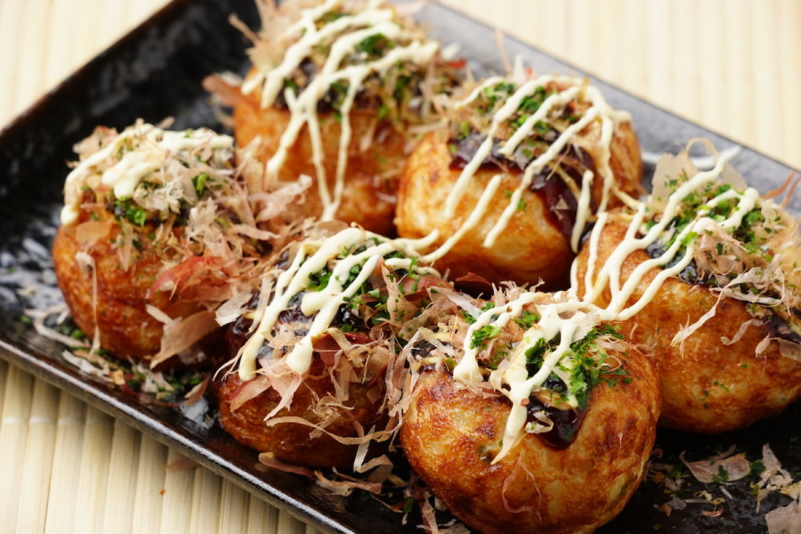

Takoyaki

Description
Takoyaki is a ball-shaped Japanese snack made of awheat flour-based batter and cooked in a special molded pan.It is typically filled with minced or diced octopus, tempura scraps, pickled ginger, and green onion.
Ingredients
- Eggs
- Flour
- Dashi Powder
- Soy Sauce
- Octopus
- Green Onions
- Tenkasu
- Takoyaki Sauce
- Kewpie Mayo
- Bonito Flakes
- Seaweed
Steps
- Mix the batter up with a whisk making sure there are no floury bits.
- Prep all of the fillings. Cut up the octopus, slice the green onions and make sure you have everything at the ready: a little dish of oil, all your ingredients, some skewers to flip the balls, and a plate to serve on. Heat up the pan.
- Generously oil the pan with a brush or a paper towel dipped in oil. Give the batter a whisk then pour into the individual compartments all the way up to the top. It is okay if they overflow a bit. Add in the fillings and let cook until the edges start to look more solid and opaque.
- Use your skewers to turn the takoyaki 90 degrees. If they do not easily move, they need more time to crisp up. Once they are at a 90° angle, pour in a bit more batter to ensure a super round ball. Let cook, stuffing in any excess batter that is outside the ball, then turn again. You should have a round ball. Cook until the balls are crispy and brown, moving the balls around from mold to mold to evenly cook (this is because most pans will have uneven heating). As the balls crisp up, it will be easier to flip them.
- When the balls are golden and crisp, pop them on a plate and brush with takoyaki sauce and squeeze on some mayo. Finish with a sprinkle of bonito and aonori. Enjoy!